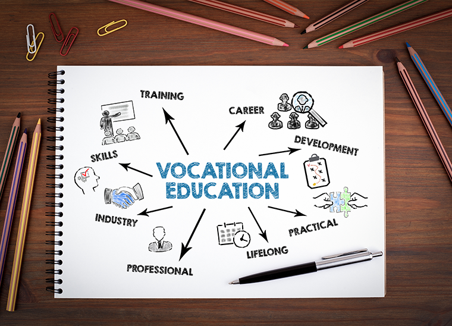
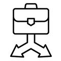
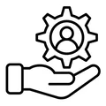

Boarding school with world-class infrastructure & vocational excellence
A residential vocational programme in Chennai where young adults with special needs build real job skills, independence and confidence — supported by caring staff and professional artists.
About Us
A caring path to independence
We help young adults and children with special needs grow vocational, life and social skills — with dignity at the centre of everything we do.

How We Began
This educational programme teaches vocational job-development skills while practising life and social skills, guided by our staff and professional artists.
Whom We Serve
We support adults with intellectual disabilities who need a higher level of care, offering respite for caregivers through our centre-based service.

What We Offer
Professional care, personalised support and tailored interventions from our Allied Health team — building independence and well-being.
Vocational Services


Our Programs
Skills that open real opportunities
Hands-on vocational training paired with educational and therapeutic support — each programme tailored to the learner.
Baking & Confectionery
Baking, decoration, packaging and safe kitchen practice.
View programme VocationalWeaving
Handloom skills that build focus and fine motor control.
View programme VocationalGardening & Horticulture
Nursery, crop care and landscape maintenance.
View programme VocationalComputer Skills
Digital literacy, data entry and online communication.
View programme VocationalPrinting & Merchandise
Print production and merchandise finishing.
View programme VocationalSelf Grooming & Hygiene
Personal care routines for confident daily living.
View programme VocationalHousekeeping
Facility care and organised, independent living.
View programme VocationalEco-Friendly Plate Making
Biodegradable plate production from natural material.
View programme VocationalLaundry & Fabric Care
Garment care, washing and pressing skills.
View programmeNIOS Support
Open-school coaching toward state certification.
View programme TherapeuticMusic & Expressive Arts Therapy
Expression and regulation through the arts.
View programme TherapeuticPlay Therapy
Structured play that builds social confidence.
View programme TherapeuticRecreational Learning
Joyful, learner-led group activities.
View programme TherapeuticOccupational Therapy
Skill-building for everyday independence.
View programme TherapeuticLife Skills Training
Social, communication and self-help skills.
View programmeWe offer certifications in
Get Involved
Do you want to empower those with intellectual challenges?
Join us as a volunteer, benefactor or partner. Every hour and every contribution helps a young adult move closer to independence.